Tackle
Rod Matters: Big
What it does. Two jobs. Reach is how far a fish can run before your line breaks. Size class (small, medium, big-fish) moves where the line-strain meter starts.
Does it matter? Big when the fish is big. 38 of the 72 fish are fine on any float rod. The rest need a longer one, and 15 of them (the giant eel, Koi, Akame and 12 more) need the longest reach, 24. On a reach-12 rod the giant eel breaks your line in about 85 % of simulated fights, on reach 24 in about 14 %.
How to choose
- Use the kit finder above: it shows the reach your fish needs and the cheapest rod that has it.
- Reach 12 covers 47 of the 72 fish. The cheap way to get it is the
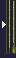
Hera rod, 3-piece, 3 m (¥200, Areas 4 and 5). - A rod made for your fish (the
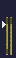
Yamame rod, 8-piece, 4.5 m for Yamame, the Hera rod, 3-piece, 3 m for Herabuna) skips the size penalty. - Size class: small rods are gentle on tiny fish (15 cm or less) and cost mistakes on big ones. The big-fish rods (Carp rod, 8-piece, 5 m,
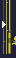
Heavy-fish lure rod, 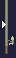
Two-handed casting rod) reach farthest but cost you 1 to 2 mistakes on most fish. Buy one only for a fish that needs reach 24. - Never sold:
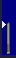
Mountain stream carbon rod, 6 m, Mabuna rod, 9-piece, 3.3 m, 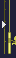
Medium lure rod, 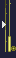
Small fly rod. Some rods exist only at special rod merchants (see Shopping notes).
Don't waste money on
- The
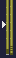
Ayu rod, 6-piece, 7 m (¥1,500, reach 9): the ¥200 Hera rod, 3-piece, 3 m reaches 12. - The
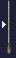
Hera carbon rod, 6.5 m (¥2,000): the ¥1,500 Carp rod, 8-piece, 5 m reaches just as far, and for 14 of the 15 long-reach fish (all but 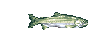
Himemasu) it gives the same room on the meter.
Hook Matters: Big
What it does. Sets where the line-strain meter starts, just like the rod. It has no say in which fish bite.
Does it matter? Big, as strong as the rod. A Yamame is landed every time (100 %) with the right-size hook and only 6 to 14 % of the time with the wrong size.
How to choose
- Named hook first. A hook named after the fish always halves the start:
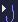
Yamame hook for 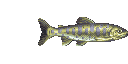
Yamame, 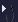
Iwana hook for 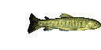
Iwana, Carp hook for 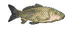
Koi, 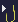
Hera hook for 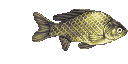
Herabuna, Eel hook for the 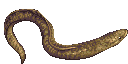
Giant eel (Oo-unagi), Bitterling hook for 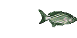
Tanago. - No named hook? Pick by fish size. Up to 15 cm: small hooks (Haya/Yamabe hook ¥15, Sleeve Higai hook ¥20, Bitterling hook ¥12). 16 to 35 cm: medium hooks (Trout hook ¥10, Generic hook ¥25, Yamame hook, Iwana hook, Hera hook, Eel hook). Over 35 cm: big hooks (Carp hook ¥35, Seigo hook ¥40, Shibi hook (literal name; exact English term unclear) ¥50).
- Cheap all-rounder for mid-size fish: the Trout hook, ¥10, Areas 2 and 3.
- The wrong size class pushes the strain meter up instead of down, so check the fish size in the finder.
Don't waste money on
- Small hooks (Sleeve Higai hook, Haya/Yamabe hook, Bitterling hook) on anything over 15 cm: they are the worst pick for most fish.
- The Ayu nose ring: it only helps for
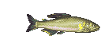
Ayu.
Bait Matters: Big
What it does. Decides which fish can bite. Every bait has a list of fish. If yours is on the fish's list and your bobber sits on the exact tile where that fish swims, it bites within a few seconds.
Does it matter? Big for catching anything at all. In the fight it only matters for a few baits named for a fish: 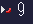
Red maggot (Himemasu), 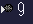
Hera paste bait (Herabuna), 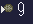
Carp paste bait and 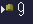
Potato bait (Koi), 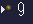
Rice porridge bait (Tanago), 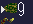
Frog (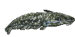
Namazu). They give the same bonus as a named hook, but the two do not stack.
How to choose
- Look your fish up in the finder and buy the bait it shows.
- Start with
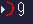
Worm (¥5): it is on the list of 44 of the 72 fish. 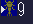
Aquatic insect and 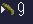
Caddis larva each cover 33, 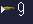
Small fish covers 32. - Fish ignoring you means the wrong tile or a bait that is not on its list. Move the cast, not the bait. The maps show where each fish starts.
- Bait and hooks are sold in stacks of 9, and the price is per stack.
Don't waste money on
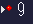
Salmon roe (¥40): all 9 fish it catches are also on the Small fish list (¥20).- A named bait together with a named hook: one of them is enough.
Float and sinker Matters: No
What it does. Float rods use floats, casting rods use sinkers. That only picks the route: neither one changes the fight (tested against the real game code).
Does it matter? No. Every float works the same. A sinker only catches bottom fish and the bite takes about 10 seconds (a float: about 2). Anything a sinker catches, a float catches too.
How to choose
- Buy the cheapest float:
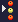
Round bead float, ¥10 (Areas 2, 4, 5). - Use a float rod unless you want a casting rod for some other reason. Its cheapest sinker is the
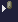
Jujube-shaped sinker, ¥30 (Areas 5, 6).
Don't waste money on
- Dearer floats and sinkers (
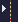
Hera float ¥250, 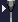
Chili float ¥100, 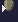
Oval sinker ¥75): same effect as the cheap ones.
Lure Matters: Some
What it does. A lure rod lets you work a lure through the water. Fish that like your lure swim after it, and you hook one by pressing A once at the right moment.
Does it matter? Some. Which fish chase a lure depends on its group: the 81 lures fall into only three, and two lures together cover all 38 lure fish. Lure size class shifts the fight start; most lures are the big-fish class, which costs the fewest mistakes overall.
How to choose
- Buy two lures:
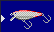
Sinking lure (¥20, Areas 2 to 5) or 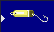
Spoon (¥25, Area 1), plus 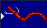
Soft worm (¥30, Areas 1 and 4). Together they cover all 38 lure fish. - Keep tapping A or B while the lure is in the water. With no button pressed no fish ever comes.
- When a fish is level with your lure, press A once (do not hold) to hook it. If you miss it swims off; keep working the lure and it comes back.
- Rods:
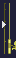
Small lure rod (¥500) or 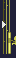
Large lure rod (¥600). For fish that need reach 24 (giant eel, Koi, Akame) take the Heavy-fish lure rod (¥650, special merchant in Area 4).
Don't waste money on
- More than two lures: lures in the same group catch the same fish.
- Looking for catch percentages here: lure and fly fights are not simulated, so the finder shows mistakes allowed only.
Fly Matters: Big
What it does. A fly rod with a fly made of body, wing and tail. The body decides which fish take it: wet bodies 33 fish, dry and terrestrial bodies 17 (all of them also wet fish).
Does it matter? Big, because of a hidden lock that is rolled once per save. Each body and wing belongs to one of four lock classes. If either class matches the save's hidden pair, the fly never bites. A fresh save starts with body class 1 and wing class 2, so the ¥5 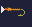
Mayfly wet NEVER bites.
How to choose
- On a fresh save buy the
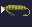
Caddis wet (¥15), or for dry-class fish the Caddis dry (¥5). Both are Area 1 ready-made flies. The finder already swaps dead flies for working ones. - Safe plan: carry the three-fly set for ¥30 (Mayfly wet ¥5, Caddis wet ¥15, Mayfly wet ¥10). Their classes differ, so at least one always works.
- If a fish sits still while your fly floats over it, the fly is blocked or the wrong class. Switch fly.
- Resting at an inn (once per town visit) re-rolls each side with a one-in-four chance, so about 1 rest in 3 changes the lock. If a fly stops working after a rest, switch fly.
- Wing is only the other lock ticket; tail is cosmetic. Body also shifts the fight: Caddis and hopper bodies suit 16 to 35 cm fish, other families help tiny fish and hurt big ones.
- Rods: Medium fly rod (¥400) or Large fly rod (¥450). The Small fly rod is never sold and Area 6 sells no fly rod.
Don't waste money on
- Custom flies from the maker (in the Area 1 to 3 towns). The same body, wing and tail costs more there than ready-made (the maker adds up all three parts; ready-made costs the body price). Build one only to get a body and wing combination the shop does not sell.
- Paying for wings and tails for looks.
Shopping notes Matters: Some
What it does. Small facts that save yen.
Does it matter? Some. None of this changes a fight, but you can waste a trip.
How to choose
- Special rod merchants: Area 4 sells the Heavy-fish lure rod (¥650); Area 5 the Carp rod, 8-piece, 5 m (¥1,500) and the Bitterling rod, 10-piece, 2 m (¥500); Area 6 the Two-handed casting rod (¥1,500). The ordinary shops there do not stock them.
- Bait and hooks come in stacks of 9. Buying when you hold 8 still costs the full price (it tops you up to 9).
- Never sold anywhere: Mountain stream carbon rod, 6 m, Mabuna rod, 9-piece, 3.3 m, Medium lure rod, Small fly rod, both mushrooms, the tub and the canoe (those two are traded for).
Don't waste money on
- Walking to an ordinary shop for a rod that only a special merchant sells.
Everything else
Short notes on the other items. Details are in the item catalogue.
Food and HP Matters: Some
What it does. HP drains when you swim (1 HP every half second), row the tub or canoe (1 HP per tile) and when a fight costs you tackle (1 to 4 HP). At 0 HP you black out and wake up with 1 HP; money, fish and tools stay. With low HP casting and lure rods get shorter casts (half at 50 HP).
Does it matter? Some. HP is never read during a fight, so full HP does not help you land a fish.
How to choose
- Free full heal: take the milk bottle (Area 3 town chest) to the Area 3 cow. The cow never runs out.
- Max HP starts at 100 and grows, up to about 190, when you catch newts, frogs, crayfish, turtles and crabs.
- Shop food heals as many HP as it costs yen (¥5 for 5 HP, up to the ¥40 Hinomaru bento for 40).
- Mushrooms are never sold. The tan flat one heals 10 HP. The red one with yellow spots is poison and drops you to 0 HP. The menu gives both the same name, so tell them apart by the icon.
Don't waste money on
- Buying food while you have milk.
- Eating a fish from the keepnet without checking its name: the menu eats the first fish, and Kusafugu sets HP to 0.
Key Matters: Some
What it does. The Key (¥100) opens locked town chests in Areas 1, 2, 4 and 6. Each chest you open uses up one key. Chests in Areas 3 and 5 need none, and a refused open (for example full inventory) keeps the key.
Does it matter? Some. You only need keys for the chests you want to open.
How to choose
- Buy one key per chest you plan to open (shops in Areas 1, 2, 4, 6) and use it by talking to the chest, not from the item menu.
- Chest will not open because your inventory is full: free a slot, leave and come back.
Don't waste money on
- Keys for Area 3 and 5 chests.
- A second key while you hold an unused one.
Jizo offering Matters: Some
What it does. Offer food to the Jizo in Area 5. The offering value (up to 255) is required for the lottery: a ticket can only win if a random number is below it. The same value roughly halves the chance of losing your hook, lure or fly after a catch (hook or lure 6 % to 4 %, fly 12.5 % to 7 % at the maximum).
Does it matter? Some. Without an offering the Lottery ticket (¥100) cannot win.
How to choose
- Offer bigger food (Hinomaru bento or Daikon radish) rather than Mandarin orange: it adds more to the value. Then draw at the counter next to the Jizo.
Don't waste money on
- Drawing without an offering.
- Forgetting that the two big prizes (1,000 and 5,000 yen) reset the value to 0.
Keepnet Matters: Some
What it does. Holds the fish you keep. A new game starts with room for 5. When it is full, fishing is blocked until you sell or eat a fish.
Does it matter? Some. Only if you fish a long time without going back to town.
How to choose
- Buy only the size you need, and you may skip sizes: 10 fish ¥300 (Areas 1, 2), 20 fish ¥400 (Areas 3, 4), 30 fish ¥500 (Areas 5, 6). The shop refuses equal or smaller sizes.
Don't waste money on
- Buying 10, then 20, then 30: every price is the full price, not an upgrade fee.
Tub and canoe Matters: Some
What it does. Boats that let you cross water without swimming. Rowing still costs 1 HP per tile, but the canoe covers about 40 % more ground per move than the tub (14 steps against 10).
Does it matter? Some. Optional, and neither is sold: both are trades.
How to choose
- Tub: give a Hariyo to the tub maker in Area 2 (one time, keep one tool slot free).
- Canoe: give fresh milk to the canoe maker in Area 3. The maker refuses if you already own a canoe.
Don't waste money on
- Drinking the fresh milk if you want the canoe.
Compass Matters: Some
What it does. The Compass (¥300) shows which way the area exit is. In Area 6, once the story allows it, it points to the giant eel.
Does it matter? Some. Mostly for the giant eel hunt.
How to choose
- Buy it if you want the game to point to the Area 6 giant eel spot.
- The Area 1 to 5 exits are listed on the maps of this site.
Don't waste money on
- Buying it just to learn exit coordinates in Areas 1 to 5.
Gold net Matters: No
What it does. The Gold net (¥150) catches 1 to 4 pieces of the area's bait on a shallow-water tile you wade into. A tile gives bait once.
Does it matter? No. Bait costs ¥5 to ¥40 a stack.
How to choose
- Buy it only if you run out of bait far from a shop.
Don't waste money on
- Buying it to save money: ¥150 buys 30 stacks of worms.